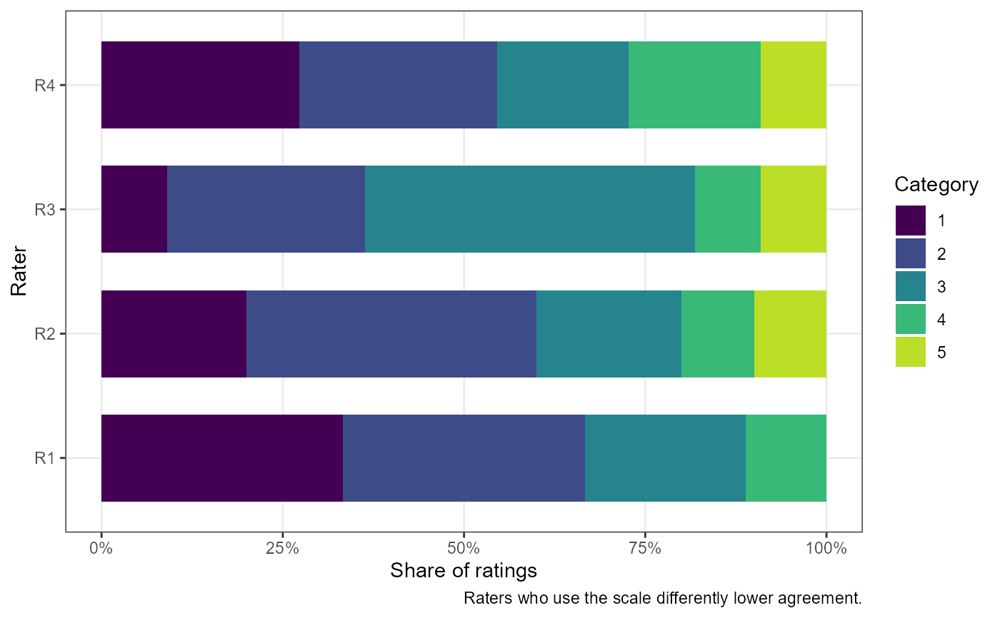

![[Stable]](figures/lifecycle-stable.svg)
Estimates and tests one agreement coefficient for categorical (nominal or
ordinal) ratings of the same subjects by two or more raters: percent
agreement, Gwet's AC1 (AC2 when weighted), Fleiss' kappa, or
Krippendorff's alpha. Missing ratings are allowed. For ordinal ratings
from many raters, see also the model-based kappa in ord_kappa_test().
Arguments
- x
A formula of the form
values ~ rater | id. LeaveNULLto usemeasure,itemandid(long data) orcol.names(wide data).- data
A data frame.
- measure, item, id
Names of the columns with the ratings, the raters, and the subjects (long data).
- col.names
Names of the columns with each rater's ratings (wide data, one row per subject).
- coef
The coefficient:
"gwet"(Gwet's AC1/AC2; default),"fleiss"(Fleiss' kappa),"krippendorff"(Krippendorff's alpha) or"pa"(percent agreement, not corrected for chance).- weights
How partial agreement between different categories is credited:
"unweighted"(default; only identical ratings agree),"quadratic","linear","ordinal","radical","ratio","circular"or"bipolar"(Gwet, 2014, ch. 3), or a custom q x q matrix with values in [0, 1] and 1 on the diagonal, ordered ascategories. Use weights only for ordered categories.- categories
All possible rating categories, in order. Defaults to the levels of a factor, and otherwise to the sorted observed ratings. Give it when some categories of the scale were never used: Gwet's AC1/AC2 and the weights depend on the full set of categories.
- conf.level
Confidence level of the interval (default 0.95).
- null.value
The hypothesized value of the coefficient.
NULL(default) gives no test.- alternative
The alternative hypothesis:
"two.sided"(default),"greater"or"less". Without anull.valuethe interval is two-sided.
Value
A list of class c("cac_htest", "htest") containing:
- statistic
The t statistic (only with a
null.value).- parameter
The degrees of freedom (only with a
null.value).- p.value
The p-value (only with a
null.value).- conf.int
The confidence interval for the coefficient.
- estimate
The estimated coefficient.
- stderr
The standard error of the coefficient.
- null.value
The hypothesized value.
- alternative
The alternative hypothesis.
- method
A description of the coefficient.
- data.name
A description of the data.
- fit
Details: observed (
pa) and chance (pe) agreement, the categories, the weight matrix, and the numbers of subjects and raters.- data
The ratings in long format.
- settings
The settings used, for the methods.
Details
All four coefficients share the observed agreement
\(p_a\), the proportion of agreeing pairs of ratings within subjects
(weighted when weights is used), averaged over the subjects with two or
more ratings. The chance-corrected coefficients are
\((p_a - p_e)/(1 - p_e)\) and differ in the chance agreement \(p_e\):
Fleiss' kappa and Krippendorff's alpha use the overall category
proportions, so they are low when one category dominates even if raters
rarely disagree (the "kappa paradox"); Gwet's AC1 uses the chance that a
rater classifies at random and is stable in that situation (Gwet, 2008).
Krippendorff's alpha also corrects for the number of pairs.
Standard errors come from Gwet's (2008, 2014) linearisation over subjects, which treats the subjects as a random sample and the raters as fixed. The interval and test use the t distribution with n - 1 degrees of freedom (n subjects; for Krippendorff's alpha, those with 2 or more ratings), and limits are clipped to the possible range of the coefficient. These match the irrCAC package (with an infinite population).
Ratings may be numeric, character or factor. Subjects with no ratings are dropped; subjects with one rating add to the category proportions but not to the observed agreement. Each subject can have at most one rating per rater.
References
Gwet, K. L. (2008). Computing inter-rater reliability and its variance in the presence of high agreement. British Journal of Mathematical and Statistical Psychology, 61(1), 29-48. doi:10.1348/000711006X126600
Gwet, K. L. (2014). Handbook of Inter-Rater Reliability (4th ed.). Advanced Analytics, LLC. ISBN 978-0970806284.
Fleiss, J. L. (1971). Measuring nominal scale agreement among many raters. Psychological Bulletin, 76(5), 378-382. doi:10.1037/h0031619
Krippendorff, K. (1970). Estimating the reliability, systematic error and random error of interval data. Educational and Psychological Measurement, 30(1), 61-70. doi:10.1177/001316447003000105
See also
cac_htest-methods for summary() and plot();
ord_kappa_test() for the model-based kappa for ordinal ratings.
Examples
# Gwet (2014): 12 subjects rated by 4 raters on a 5-point scale
ratings <- data.frame(
R1 = c(1, 2, 3, 3, 2, 1, 4, 1, 2, NA, NA, NA),
R2 = c(1, 2, 3, 3, 2, 2, 4, 1, 2, 5, NA, NA),
R3 = c(NA, 3, 3, 3, 2, 3, 4, 2, 2, 5, 1, 3),
R4 = c(1, 2, 3, 3, 2, 4, 4, 1, 2, 5, 1, NA))
cac_test(col.names = c("R1", "R2", "R3", "R4"), data = ratings)
#>
#> Gwet's AC1 for 4 raters
#>
#> data: R1, R2, R3, R4
#>
#> alternative hypothesis: two.sided
#> 95 percent confidence interval:
#> 0.4608133 1.0000000
#> sample estimates:
#> Gwet's AC1
#> 0.7754441
#>
# Quadratic weights, Fleiss' kappa, tested against 0.6
res <- cac_test(col.names = c("R1", "R2", "R3", "R4"), data = ratings,
coef = "fleiss", weights = "quadratic",
null.value = 0.6, alternative = "greater")
res
#>
#> Weighted (quadratic) Fleiss' kappa for 4 raters
#>
#> data: R1, R2, R3, R4
#> t = 1.8142, df = 11, p-value = 0.04849
#> alternative hypothesis: true Fleiss' kappa is greater than 0.6
#> 95 percent confidence interval:
#> 0.6026755 1.0000000
#> sample estimates:
#> Fleiss' kappa
#> 0.8649351
#>
summary(res)
#> The test is statistically significant (t(11) = 1.81, p = 0.048; Fleiss'
#> kappa = 0.865, 95% lower bound 0.603) at the 0.05 alpha level. The null
#> hypothesis can be rejected: at the desired error rate, it can be stated
#> that the true Fleiss' kappa is greater than 0.6. The estimate is
#> Fleiss' kappa: agreement corrected for chance agreement from the
#> overall category proportions (observed agreement 0.975, chance
#> agreement 0.818). Partial agreement between categories was credited
#> with quadratic weights. The data had 12 subjects, of whom 1 had a
#> single rating, rated by 4 raters (41 ratings) in 5 categories. The
#> interval and t test use the standard error of Gwet (2008), which treats
#> the subjects as a random sample and the raters as fixed, with 11
#> degrees of freedom.
plot(res)
